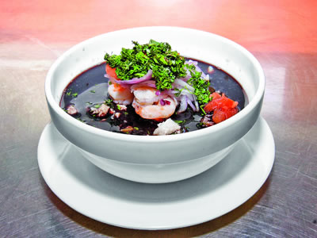
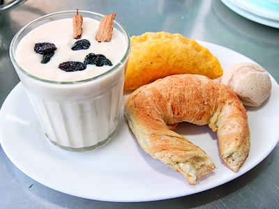
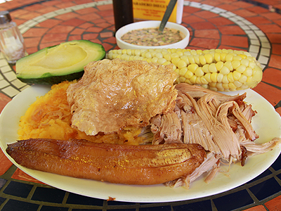
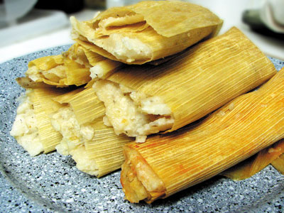
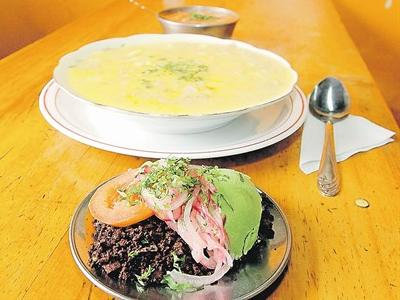

COMIDA ECUATORIANA
en sabor la mejor...
Buscar
Inicio
Recetas del Chef
Recetas Regionales
Favoritos:





Historial:
Las mejores fotos de comida en twitter
¿Qué comer en Ecuador?
El placer de los huevos benedictinos
Un menú degustación con plátano
Costillas con Chutney de mango
Ecuatorianos prueban las cholas de guano